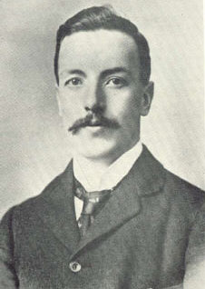

|  |
Coats' disease = It is a developmental retinal vascular anomaly consisting of leaking telangiectatic and aneurysmal retinal vessels with associated lipid exudation, which frequently occurs in one eye of otherwise healthy boys in the first decade of life.
George Coats began his medical studies at Glasgow University in 1892, graduated in 1897 and received his doctorate there in 1901. He was a resident at the Royal Western and Eye Infirmaries in Glasgow, and continued his studies in ophthalmology in Vienna, visiting Munich, Freiburg and Zurich.
Coats commenced work at the Royal London Ophthalmic Hospital in 1902, became a FRCS in 1903 and in 1905 he was appointed curator and pathologist at Moorfields hospital. In 1906 he became assistant ophthalmic surgeon at the Great Northern Central Hospital, in 1909 at Royal London Ophthalmic Hospital and, in 1911, also at the St. Mary’s Hospital. He held numerous appointments at London Teaching hospitals, but at his death was assistant surgeon to the Royal London Ophthalmic Hospital and assistant ophthalmic surgeon St. Mary’s Hospital.
1. Coats G: Forms of retinal disease with massive exudation. R Lond
Ophthalmic Hosp Re
17:440–525, 1908.
2. Coats G: Ueber Retinitis exudativa (retinitis hemorrhagiga externa).Graefes
Arch Clin Exp
Ophthalmol 81:275–327, 1912.